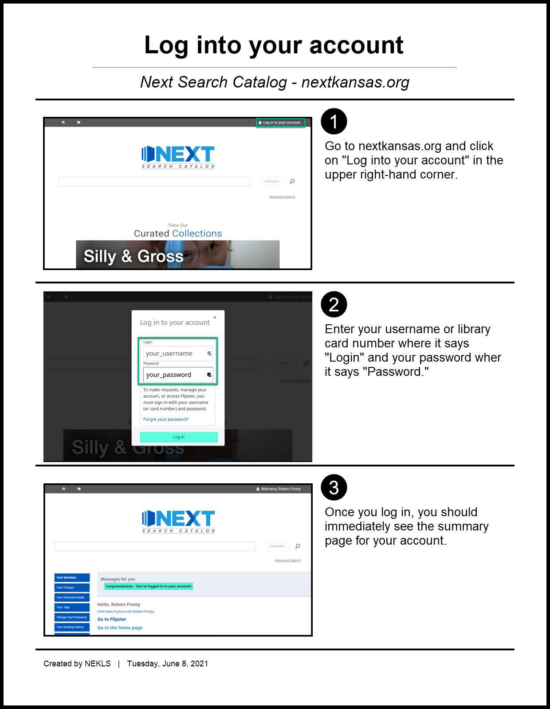

Circulation history overview¶
By default, circulation history is turned on for most borrowers in Next Search Catalog. The biggest exceptions to that general rule are borrowers from Highland Community College, Borrowers with digital only cards, and some library associate accounts. Additionally borrowers can delete and disable their circulation history in the public catalog. Staff, however, are not able to control a borrower’s circulation history.
Circulation history is referred to as “Circulation history” in the staff client and “Your Reading History” in the public catalog.
Circulation history in the staff client¶
A borrower’s circulation history can be found in the staff client on the “Circulation history” tab in their account.
When you access a borrower’s circulation history you will a table listing the titles they checked out along with dates, call numbers, checkout location, and other relevant circulation information.

In the public catalog, borrowers have the ability to delete their own history and to disable circulation history for items they check out. In the staff client you can see the borrower’s “Privacy” setting on the details page in their account but staff cannot change a borrower’s privacy setting. Borrowers can only change their privacy setting in the OPAC.
Reading history in the OPAC¶
Library card holders can access their reading history on the “Your Reading History” tab in the public catalog.
To get there:

To delete your reading history:
To disable your reading history:
To enable your reading history (if it’s been disabled):
Frequently asked questions¶
- Q: Why do we delete circulation history after 13 months?
- A: Two reasons
- The primary reason is to minimize the size of the database. Koha stores circulation history in a table in the database called “old_issues” and early on when NExpress was new (circa 2008-2009), the data was kept indefinitely. Sometime between 2012 and 2014, the amount of data being stored began to cause performance issues. At that time we asked ByWater Solutions to implement a script on the server that deletes circulation data from the old_issues table 13 months after items had been checked in. Keeping 13 months worth of data allows us to keep enough data so that borrowers who want to save their history have the information they want and allows us to run good statistical reports for the previous year without overburdening the database.
- A secondary reason is to help maintain borrower privacy. By Kansas law, a borrower’s circulation history is considered confidential. Because keeping the data for the previous 13 months is the default setting when adding a new borrower, many borrowers don’t even know their circulation history is being kept. By limiting the data to the previous 13 months, we help maintain long term confidentiality for borrowers who may not even realize this data is being kept.
- Q: Why does the “Privacy Pref” on the borrower’s detalis page in the staff client show 3 options (Default | Forever | Never) but borrowers only see two options (Previous 13 months | Never) in the public catalog?
- A: “Forever” is an option that is no longer available in the drop-down menu in the public catalog because it was redundant. Since borrowers set to “Default” or set to “Forever” all have their history cleared 13 months after items are returned, offering both options in the public catalog would be confusing to borrowers.
- Q: OK, so why do some borrowers have a “Privacy Pref” that says “Forever?”
- A: Those preferences were set before we removed the redundant “Forever” setting from the public catalog.
- Q: If a borrower has their privacy set to “Never” remember their circulation history and I accidently check in a damaged item, how can I find out who it was checked out to last?
- A: Circulation history is attached to a borrower account. If a borrower has their privacy set to never remember their circulation history, then the circulation history is removed from the borrower’s account. However, item records store the borrowernumber of the last borrower they were checked out to and this operates independent of circulation history. This information cannot be found through a borrower account. It can only be found through the item record and it is removed from the item record the next time an item is checked in.